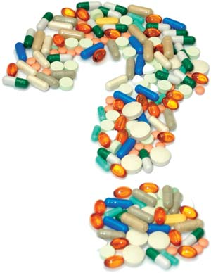
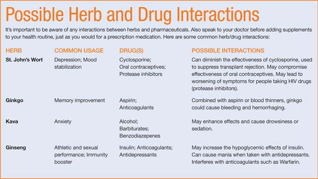

What You Should Know About Drugs Vs. Herbs
By Lynn Keiley & Stephanie Bloyd
December 2006/January 2007
Medicines, both herbal and pharmaceutical, are big business. These days, Americans spend $200 billion per year on prescription drugs and $20 billion on herbs and other dietary supplements. When choosing the best remedy or preventive medicine, most of us simply want the safest, most effective option available, whether it’s food, herbs or a pharmaceutical drug. People often turn to supplements because they’re seen as more natural than drugs, can have fewer side effects and generally cost less.
For instance, the popular drug Celebrex, used to treat arthritis, costs more than $4 per day, while ginger supplements, a popular herbal remedy for inflammation, cost about $0.38 per day. The high cost of prescription drugs can cause many to compromise: For example, in 2001 alone, nearly one in four senior citizens reported skipping doses or leaving prescriptions unfilled.
Recent prescription drug recalls, such as the 2004 Vioxx withdrawal, also have cast a dubious light on both the U.S. Food and Drug Administration (FDA) and the pharmaceutical industry, prompting more people to turn to nutritional supplements. A September 2006 study on drug safety conducted by the Institute of Medicine, part of the National Academy of Sciences, found that “The credibility of the FDA, the [pharmaceutical] industry, the academic research enterprise, and health care providers has become seriously diminished in recent years. Of particular concern are the common but inaccurate perceptions that the FDA approval represents a guarantee of safety, that approval is based on high degrees of clarity and certainty about a drug’s risks and benefits.”
Though herbal supplements are an attractive alternative to pharmaceuticals, the former actually receives less governmental regulation, so it’s important to be aware of how both industries are regulated, and to do your homework when deciding which treatment is right for you.
Regulation of Drugs
The FDA is responsible for monitoring the safety and efficacy of pharmaceutical products. While most people assume the agency itself closely tests new drugs, this is not the case. Pharmaceutical companies must provide the FDA with research from clinical trials to prove their new drugs are safe for the market - a practice that unfortunately leaves room for bias, according to Marcia Angell, M.D., former editor in chief of The New England Journal of Medicine.
“Can we believe those trials? After all, that crucial last stage of research and development is usually sponsored by the company that makes the drug, even if the early research was done elsewhere. Is there some way companies can rig clinical trials to make their drugs look better than they are? Unfortunately, the answer is yes. Trials can be rigged in a dozen ways, and it happens all the time,” Angell writes in her book The Truth About the Drug Companies (see Mother Earth Shopping to order). Furthermore, FDA approval committees often include members with ties to pharmaceutical companies. In fact, the 2006 Institute of Medicine’s study recommended that the FDA should “establish a requirement that a substantial majority of the members of each advisory committee be free of significant financial involvement with companies whose interests may be affected by the committee’s deliberations.”
Regulation of Dietary Supplements
Alternatively, herbal supplements are regulated as foods in the United States, rather than drugs, under the 1994 Dietary Supplement and Health Education Act (DSHEA). Supplement manufacturers are responsible for ensuring their products are safe before marketing them, but the manufacturers generally aren’t required to register their products with the FDA, unless the ingredients are new to the U.S. market. The law allows supplement manufacturers to claim their products help “maintain the structure or function of the body” without FDA preapproval or regulation, but they must include an FDA disclaimer and notify the FDA within 30 days of marketing the product. By law, manufacturers may print health claims on the packaging to describe a supplement’s “effect on reducing the risk of or preventing disease” only if the FDA approves use of the claim. The FDA is also responsible for taking action against supplements after they reach the market and problems are reported.
Once a problematic herb appears on the market, it can take years before it’s pulled off the shelves, since the burden of proof lies on the FDA to determine that it’s unsafe. For years, the agency received reports of people suffering heart attacks, strokes and seizures after using the popular weight-loss herb ephedra, and several people died. It wasn’t until the death of Baltimore Orioles pitcher Steve Belcher, who used ephedra, that there was enough of a spotlight on the herb’s safety to spur the FDA into action. “Consumers are provided with more information about the composition and nutritional value of a loaf of bread than about the ingredients and potential hazards of botanical medicines,” according to Donald M. Marcus, M.D., and Arthur P. Grollman, M.D., authors of a recent article in The New England Journal of Medicine.
And yet, consumers are somewhat justified in their comfort with botanicals and other supplements. Far fewer people suffer adverse reactions to herbs than to pharmaceutical drugs. There’s currently no mandatory adverse event reporting system for supplements or nonprescription drugs, so monitoring the number of harmful effects is challenging. However, a study published in The Lancet found that there were only a few hundred calls in one year to U.S. poison control centers involving probable adverse events of dietary supplements. In contrast, another study published in the Journal of the American Medical Association, found that there were more than 200,000 adverse reactions to pharmaceutical drugs reported by hospitals in one year, and half of the reactions were fatal. Although these results were hotly debated in the medical community, a recent report in the United Kingdom also found that nearly a quarter of a million people there were admitted to hospitals in a single year because of adverse drug reactions.
Proving That Herbs Work
There are millions of people taking herbs and other dietary supplements who swear by their efficacy. And though many herbs and supplements are safe and effective, medical science has been slow to verify health claims. While pharmaceutical companies spent more than $51.3 billion in 2005 on drug discovery and development, herbs and other supplements often don’t get big money for research since they can’t be patented for a financial payoff the way pharmaceuticals can.
Noted herbalist James A. Duke, Ph.D., says choosing between herbs and drugs is difficult because the information we need to make these decisions is largely unavailable. To date there have been only a few clinical trials in which the closest herbal medicine was compared to a pharmaceutical drug and a placebo control.
That’s why for years, Duke has been campaigning to get a Congressional mandate that an alternative choice for treating a condition must be trialed along with any new drug in order to determine which is most effective, and just as importantly, which has fewer side effects. Unfortunately many new drugs currently are tested only against placebos, rather than existing medications or herbs.
“If the government really wants to improve Americans’ health, they should mandate independent research to prove that many herbs are competitive with pharmaceuticals,” Duke says. “Herbs are orders of magnitude safer, and they’re also cheaper.”
Mark Blumenthal, founder of the nonprofit American Botanical Council, thinks that if the current regulations were to be fully, consistently and effectively enforced, no further regulations would be necessary. “By law, dietary supplements are foods, not drugs, so they shouldn’t be required to show safety or efficacy in the same way as conventional drugs, which by their very nature are usually novel chemical compounds that have never existed in nature and to which humans have never been subjected.”
Blumenthal’s group and many in the supplement industry support better labeling to clearly indicate a product’s potential to produce adverse effects, as well as to outline conditions when the supplement might create complications or interfere with medications.
Drug/Herb Interactions
Many herbs have been used to treat specific ailments for centuries. But just because a product is natural or has been around for a long time, that doesn’t mean you should assume that it’s safer than pharmaceuticals. Just like interactions between drugs, many herbs can cause adverse reactions when combined with drugs or other supplements. A recent study published in the Journal of the American Medical Association revealed that among prescription drug users, one in six adults takes at least one herbal supplement along with a prescription drug, and many are completely unaware of the impact one might have on the other.
This lack of information can have serious implications. For example, the popular memory booster ginkgo taken with aspirin may cause bleeding, and St. John’s wort, a popular treatment for depression, can negate the effectiveness of oral contraceptives as well as protease inhibitors used to treat HIV (see “Possible Herb and Drug Interactions”).
Those with existing medical conditions, and pregnant women or those planning to conceive, need to be especially aware of drug/herb interactions, and speak with their physicians before making supplements a part of their health programs, just as they would before taking a prescription drug.
Supplement Standards
Another good reason for doing research before using a new herb is that several recent product review studies have shown that what you get in a supplement bottle may not always be what it says it is. A recent survey of valerian, a popular herb used to promote sleep, conducted by independent testing service ConsumerLab.com, found that many of the brands they tested were low potency or contaminated. Of the eight products they tested, one was contaminated with lead, and two others with cadmium, a heavy metal toxic to the kidneys.
FDA regulations have been introduced that would address these problems. The standards, called the Good Manufacturing Practice Regulations, were allowed for under the DSHEA more than a decade ago; however, the final rules have been delayed in the Office of Management and Budget since October 2005, with no firm release date in sight.
The Natural Products Association has also developed a Good Manufacturing Processes (GMP) designation for its members, who may display the GMP symbol on their supplement labels to promote their adherence to quality manufacturing practices. Additionally, both NSF International and the United States Pharmacopeia offer label quality designations for supplement manufacturers. See “Drug and Dietary Supplement Resources” to find out which brands have been tested.
What can you do to protect yourself in the meantime? Do your homework to find out all you can before making any herb or drug a regular part of your health routine. Also be sure to speak with your doctor before taking supplements. So many people are taking alternative medicines these days that some conventional medical practitioners are becoming better informed and more accepting of these treatments. Your doctor should be able to help you avoid complications between the herb and any other medications you might be taking.
Possible Herb and Drug Interactions
It’s important to be aware of any interactions between herbs and pharmaceuticals. Also speak to your doctor before adding supplements to your health routine, just as you would for a prescription medication. Here are some common herb/drug interactions.
Drug and Dietary Supplement Resources
Visit the following Web sites to learn more about supplements and pharmaceuticals, as well as find the latest research:
•Herbs for Health magazine
(Click on the “Herbal Library” to access the extensive library of the American Botanical Council)
•U.S. Food and Drug Administration
(For drug information)
•Center for Food Safety and Applied Nutrition
(For dietary supplement information)
•Memorial Sloan-Kettering Cancer Center
•National Center for Complementary and Alternative Medicine
•Office of Dietary Supplements
 IMAGE SOURCE/SUPERSTOCK Learn what you need to know to choose between drugs and herbs. |
 MATTHEW T. STALLBAUMER Get your facts straight before choosing between prescriptions and supplements. |
MATTHEW T. STALLBAUMER Online research can help you make safe choices when choosing between drugs and herbs. |
|
 MATTHEW T. STALLBAUMER Possible Herb and Drug Interactions |
|
|